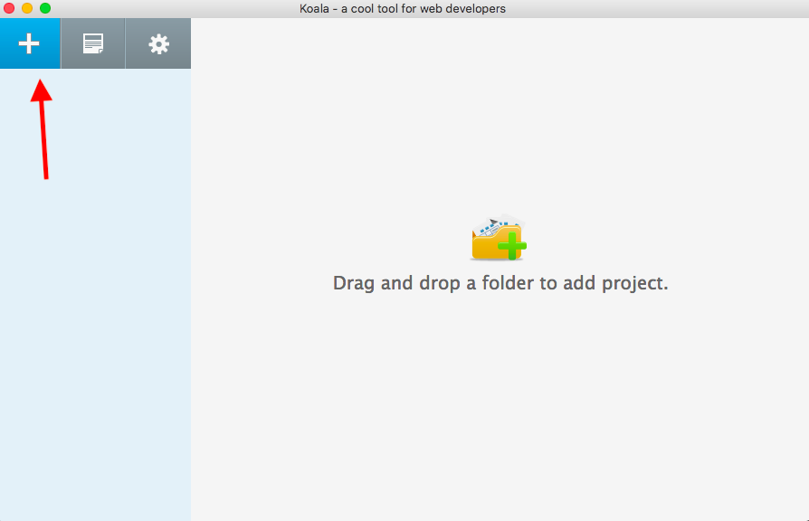
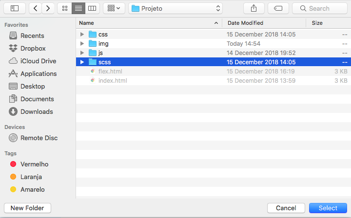
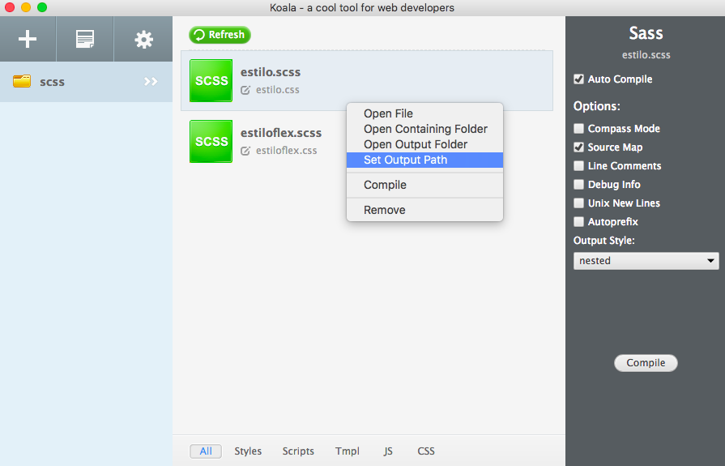
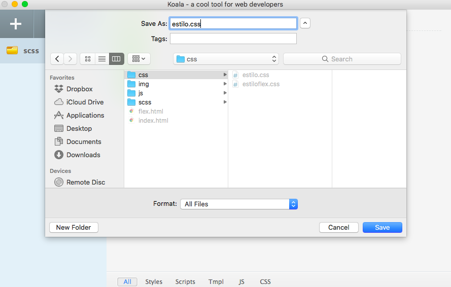

Tutorial - Usando o Koala
O Koala é um pre-processador open source multiplataforma que suporta as linguagens Less, Sass, Compass e CoffeScript. O Koala também tem compilação em tempo real, compressão e notificação de erros. Para esse tutorial utilizaremos a linguagem Sass.
Nesse pequeno tutorial nós vamos instalar e configurar o Koala. Clique no link abaixo para realizar o download e instalação. A instalação pode sofrer pequena variação de acordo com a sua plataforma.

Após a instalação vamos configurar nossa pasta onde ficarão os arquivos Sass. Na pasta do seu projeto crie a pasta scss e css como na imagem abaixo.

Depois abra o Koala e clique no botão + para adicionar uma nova pasta. Selecione a pasta scss criada anteriormente.  
Após adiciona a pasta ao Koala vamos configurar o arquivo de saída ao ser compilado.
Clique com o botão direito no arquivo e selecione a opção Set Output Path.

Selecione a pasta de destino que neste caso é a pasta css criada anteriormente e digite o nome do arquivo de saída que nesse caso é estilo.css.

A partir de agora toda alteração que você fizer no arquivo scss será compilado automaticamente e o arquivo css compilado será colocado na pasta selecionada anteriormente